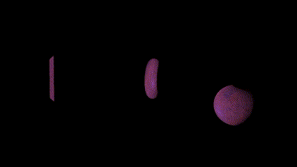
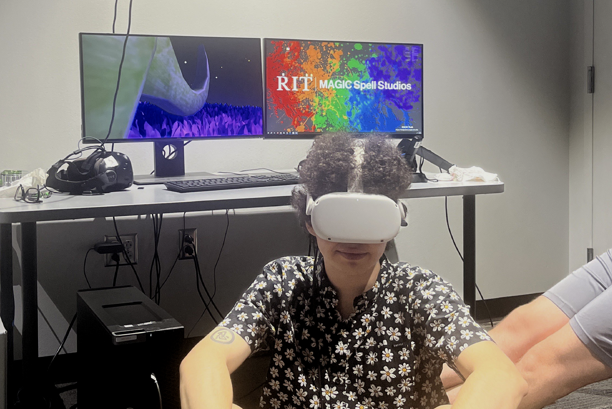

Current Projects
Graphics
PS5 Engine & All-Wheel Brawl

Skills: PlayStation 5 Development Kit, C++
Team Size: 7 (Game), 6 (Engine)
January - May 2024
The Playstation 5 engine was a basic game engine created using the Sony Playstation 5 Development Kits in a team over the course of a single semester. The goal was to simulatenously develop the engine, game prototypes in Unity or Unreal, and then port those games over into the created engine.
After taking Console Development in Fall 2023, a number of us decided to move on to a Production Studio to continue our exploration of the Sony Dev. Kits. We had experience on the PS4, but had yet to actually try anything practically on the PS5. Due to the number of students interested in the projects, we split into two design teams with one core team for the engine. This core engine team would work together until the needs of the projects differed.
The graphics side has lambertian lighting, texture and model loading, skyboxes, directional and point lights, transparency, and a basic particle system. At one point we had PBR but both design teams later admitted they didn't actually need it, so we scrapped it. We ended up having an issue where all text on textures displayed backwards, but unfortunately we did not have the time to fix it.
DirectX 12

Team Size: Solo
January - May 2024
The DirectX 12 graphics engine was a continous project in a graphics course at RIT. The main goal of the project was to slowly implement raytracing features, culminating in a project that displayed many of the core capabilities.
In Spring 2024, I continued the Game Graphics Programming sequence. The beginning of the course focused on DirectX 12 with us working within the API and going through the same process we had in GGP1. After the two projects had similar features, we moved on to the basics of ray tracing. As a class, we walked through both ray tracing as a console application and as a part of DX 12.
DirectX 11

Team Size: Solo
January - May 2023, April - May 2024
The DirectX 11 graphics engine was a continuous project over the course of two classes, Game Graphics Programming I and II. The goal was to implement key features of rendering and graphics engines, ending with a product that displayed those capabilities.
In the Spring 2023 semester, I took Chris Cascioli's Game Graphics Programming I class. The course focused on the basics on graphics engines using DirectX 11. Using Professor Cascioli's code as a base, the final DirectX project can load obj files, create directional and point lights, use multiple different types of texture maps to create materials, and has an adjustable radial blur around the camera.
In Spring 2024, the end of GGP2 allowed us to choose to continue in DX 11 or DX 12. I ended up choosing to work in DX 11 as I was also working on a graphics engine for the PS5 in a production studio. At the end of this course, I implemented basic particle effects and chromatic abberration.
Read More
Technical Art
Changeling

Skills: Unreal Engine 4, Lighting & Material Optimization, Art Pipeline, Technical Documentation, Perforce
Team Size: 80
May - August 2023
Changeling is an in-progress project in development at RIT. It's a VR mystery puzzle game where the player interacts with a family's minds to figure out what happened to the youngest child. Each level takes the player through a different character's mind, giving them insight into the family members and what might have happened.
My role as the lead technical artist on the project was to coordinate visual changes to the game in conjunction with the art team and to ensure that the game was ready for early access by the end of the year. That summer was the first time Changeling had dedicated technical artists and we increased the overall frame rates from as low as 6 to as high 200 fps. The visuals had drastically different styles due to the majority of the assets being free or bought assets from various asset stores.
During Summer 2023 I worked on the entrepreneurial co-op project Changeling. Changeling is a VR game where the player explores the mindscapes of members of a family to solve the mystery of what happened to the baby. At the time I joined the project, it had been in development for around 3 years.
Changeling updates can be found here.
Read More
Painted World: Neo-Versailles
Team Size: 30
August 2022 - May 2023
Neo-Versailles is a First-Person Puzzle RPG Horror where the player explores a destroyed palace of Versailles through corrupted paintings. The player utilizes paint to explore the world and defend themself from the Demon of Despair.
Neo-Versailles was designed by capstone students at the ArtCenter of California. As an RIT student, I was part of a team brought on to assist with the programming for the project.
The basis of the inventory code created by both myself and another RIT student, Megan Schier, was used in later ArtCenter projects.
Read More